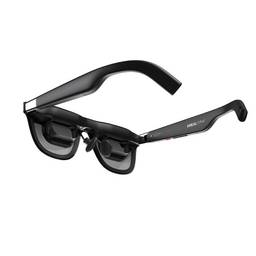
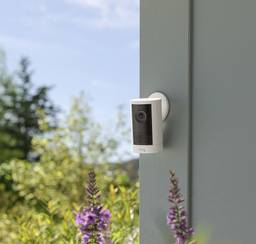
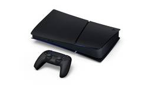

テクノエッジ TechnoEdge
https://www.techno-edge.net/
テックメディア TechnoEdge (テクノエッジ)公式サイトです。サイエンスから最新ガジェット、サービスやコンテンツまで、最前線のニュースとレビュー、コラムをお届けします。
フィード

FPGAセガ・任天堂レトロ互換機Analogue Mega Sg / Super Nt 復活、無線内蔵やUSB-C追加で再販
テクノエッジ TechnoEdge
携帯ゲーム互換機Analogue Pocketのメーカー Analogueが、終売していたスーパーファミコン互換機「Super Nt」とメガドライブ互換機「Mega Sg」をついに復活させます。
4時間前

『フォートナイト』がLinux対応へ。Linux版新アンチチートをEpic Gamesが開発中 1
1
テクノエッジ TechnoEdge
Epic Gamesは、ゲームのアンチチートソフトウェア「Easy Anti-Cheat（EAC）」のLinux版新バージョン「EAC Linux V2」を開発中だと発表、それに伴い人気ゲーム『Fortnite』のLinux対応にも取り組んでいることを明らかにしました。
5時間前

ペダルを回して敵を倒せ！ ロードバイクでローグライクを戦うローグライドゲームを作った（CloseBox） 1
テクノエッジ TechnoEdge
絵文字を使って勝手にプレイを続けるローグライクゲーム「探犬♾️」を、スマートトレーナーに接続し、ロードバイクに乗りながらローグライクをプレイする。そんなゲームを作りました。
14時間前

Meta、スマートグラスで意図しない音声記録が発生していた問題を認める。すでに問題は解決したと報告 2
テクノエッジ TechnoEdge
10月13日、複数のRay-Ban Metaユーザーが、ユーザーの同意なくスマートグラスが会話を録音していることに気づき、コミュニティサイトのRedditに報告しました。その後、Metaはこの問題を認め、すでに対策を施したとユーザーに説明しています。
17時間前

AIで何かを作っている人が、日本で一番集まる日。AIクリエイター85サークル、全日本AIハッカソン決勝、AIアートGP授賞式——「AIフェスティバル 2026」11月7日渋谷、入場無料 2
テクノエッジ TechnoEdge
生成AIを毎日使っている人ほど、「自分以外の人が、AIで何を作っているのか」を生で見る機会は意外と少ないものです。SNSに流れてくる作品や成果物は、どうしてもバズったものに偏ります。
1日前

Qwen3.8-27Bを約7分の1に圧縮しノートPCで動くLLM「Saluki 27B」、画像と音声にも対応した判断特化型AIファミリー「Open d1」など生成AI技術5つを解説（生成AIウィークリー） 3
テクノエッジ TechnoEdge
今回の「生成AIウィークリー」（第163回）は、Google開発のマルチモーダル埋め込みAIモデル「EmbeddingGemma 2」や、Qwen3.8-27Bを約8GBに圧縮した軽量モデル「Saluki 27B」を取り上げます。
1日前

XREAL 1 Pro+ 発表 ビデオグラスの新フラッグシップ、輝度や装着感を改良 2
テクノエッジ TechnoEdge
XREALが、ARグラス「XREAL One Pro」の後継モデル「XREAL 1 Pro+」を発表しました。
1日前

テスラが空飛ぶクルマ「ロードスター・ロケット」実演、イーロン・マスクいわく「楽しさは10点満点中11点」 逆さに貼り付く吸引ファンも搭載 2
テクノエッジ TechnoEdge
テスラが空飛ぶスポーツカー「Roadster Rocket」をテキサス州のSpaceX試験場で公開しました。
1日前

iPhone Duo予約は本日16日21時から。Apple Storeで「予約準備」を忘れずに キャリア価格と割引一覧
テクノエッジ TechnoEdge
Apple初の折りたたみスマートフォン「iPhone Duo」は、日本時間で10月16日(金)21時から予約受付を開始します。発売は10月23日。
1日前
生成AIグラビアをグラビアカメラマンが作るとどうなる？第76回：pixel-spaceな新顔画像生成AI「iris-3b」を使いやすくしてみた（西川和久） 1
テクノエッジ TechnoEdge
10月はFLUX 3 ImageやKrea 3など、新しいのが発表されているが、前者はオープンとはいえ重みは未公開、後者はオープンかどうかは不明でアーリーアクセスのみ。そんな中、登場したのがSperidlabsのiris-3bだ。
2日前

Meta、オープンウェイトAI「Muse Spark Open」を無償公開。アップルが協力、複数Mac Studio使いローカル動作 3
テクノエッジ TechnoEdge
Metaは、オープンウェイトAIモデル「Muse Spark Open」のウェイト（学習済みの重み・パラメーター）を公開しました。
2日前
Kindleが最大39%オフ。Amazonプライム先行セールで手書き対応カラー最新モデルScribe Colorsoft も2万円以上引き
テクノエッジ TechnoEdge
Amazon プライム感謝祭先行セールで、Kindle電子書籍リーダーが大幅割引を実施しています。
2日前

配線不要のRing 4K防犯カメラが1万円台。Amazonがカメラ新製品4機種、2Kドアベルも
テクノエッジ TechnoEdge
Amazonは10月7日、ホームセキュリティブランドRingの新製品4機種を発表しました。
2日前

RTX 50シリーズの国内価格、米国より最大41％高い？東京のPCショップ価格が話題に 9
テクノエッジ TechnoEdge
コミュニティサイトRedditのユーザーが、日本国内でのNVIDIA RTX 50シリーズ搭載製品の高額さを報告、米Amazonでの販売価格に比べ最大41％も高いと指摘しました。
2日前
小さくなったXBOX Nanoコントローラー発表 スマホやPCも対応で約99g
テクノエッジ TechnoEdge
マイクロソフトが純正ゲームコントローラの新製品 XBOX Nano コントローラーを発表しました。
3日前

動画AI使ってほぼ実写に。自宅のロードバイクでブロードウェイや石神井公園を走るソフトを自作した（CloseBox） 3
テクノエッジ TechnoEdge
インドアバイクのスマートトレーナーと連動したZwiftのようなバーチャルサイクリングアプリを自作しました。
3日前

OpenAI役員会議室に盗聴器、外国籍のエンジニア社員逮捕 AIに作りかた訊きテレビ裏に設置、トイレットペーパーで隠す 3
テクノエッジ TechnoEdge
米司法省は10月13日(米国時間)、サンフランシスコのOpenAIオフィスの役員会議室に録音装置を仕掛けたとして、同社のエンジニアでサウジアラビア国籍のAbdulrahman Alfozan容疑者(35)を盗聴の罪で訴追したと発表しました。
4日前
Claude CodeハッカソンBuilt with Claude: Japan発表、賞品は800万円分のAPIクレジット。10月26日まで申込み受付中 2
テクノエッジ TechnoEdge
AnthropicとAIコミュニティのCerebral Valleyが、AIコーディングツール「Claude Code」を使う日本在住者向けのオンラインハッカソン「Built with Claude: Japan 2026」開催を発表しました。
4日前
「新しいApple TV 4K」発表。HomePod 4台と連携でサラウンド環境構築、新しいSiri Remoteも
テクノエッジ TechnoEdge
アップルは、第4世代目となる新しいApple TV 4Kを発表しました。HomePod4台と連携することで「アップル史上最も臨場感あふれるホームシアター体験」を提供するとうたいます。
4日前
アップル「HomePod mini 2」発表。4台でApple TV 4Kのサラウンドシステム化が可能
テクノエッジ TechnoEdge
アップルが、スマートスピーカーの新製品「HomePod mini 2」を発表しました。2020年の初代HomePod mini以来となる新モデルはS10チップを搭載し、Siri AIへの対応をうたいます（英語版が後日提供予定）。
4日前
Apple、新しいスマートホーム製品 HomeView 発表。7インチ画面にSiri AI搭載、6人まで見分けて本人向け表示に 2
テクノエッジ TechnoEdge
アップルが新しいスマートホーム製品「Apple HomeView」を発表しました。
4日前

Meta、フロンティアAIモデル『Muse Wonder』発表 「SNS映えする3Dデモゲーム」より実務優先、記憶と集中でエージェント能力強化
テクノエッジ TechnoEdge
Metaは米国時間10月12日、AIモデル「Muse」シリーズの新世代「Muse Wonder」と上位版「Muse Wonder Full」を発表しました。
4日前

PS5に数量限定のミッドナイト ブラック モデル、GTA VIと同日発売。黒光学ドライブも 1
テクノエッジ TechnoEdge
ソニー・インタラクティブエンタテインメント(SIE)が、PS5の国内向けモデル「PlayStation 5 デジタル・エディション 日本語専用」に、数量限定の新色ミッドナイト ブラック(CFI-2200B02S)を追加しました。
4日前
CEATEC 2026 開幕、幕張メッセで16日(金)まで。アワードは三菱電機・TDK・日立製作所が大臣賞受賞
テクノエッジ TechnoEdge
「CEATEC 2026」が10月13日、幕張メッセで開幕しました。CEATECは電子情報技術産業協会（JEITA）が主催するデジタルイノベーションの総合展示会。
4日前

Xがサブスク刷新、GrokやCursorと一体化。移行で値下げのプラン、実質値上げの場合も 青バッジは月1280円から 17
テクノエッジ TechnoEdge
X (旧Twitter)やGrokを運営するSpaceXSI (xAI)が、X PremiumとGrok、Grok Bot、Cursorをまとめた新サブスクリプション「The X Subscription」を開始しました。日本でも購入でき、Xの認証バッジ(青バッジ)が付く最安プランはWeb版の月額1,280円になります。
4日前
最大40%オフ！文字起こし無料のComu AIボイスレコーダーが期間限定セール Comu Action Proは録ったあとの資料作成や共有まで自動化 1
テクノエッジ TechnoEdge
AIボイスレコーダーの『Comu Action Pro』『Comulytic Note Pro』が、最大40%で購入できる秋の特別割引キャンペーンを開始しました。
5日前
Google Fitbit Edge発表。画面つき1週間駆動の軽量フィットネストラッカー、不規則心拍の検出や自動ワークアウト認識100種で2万6800円
テクノエッジ TechnoEdge
GoogleがFitbitブランドの新しいフィットネストラッカー「Google Fitbit Edge」を発表しました。
5日前

なんでもリバースエンジニアリング。ソースコード非公開のアプリをAIに解析させ、類似機能を作らせるオープンソースツール「REA」（生成AIクローズアップ） 419
テクノエッジ TechnoEdge
今回は、既存のAIエージェントと連携して、アプリやソフトウェアの仕組みを解き明かす（リバースエンジニアリング）解析ツール「REA」（Reverse Engineer Anything）を取り上げます。
5日前
『チー付与』『DARK MACHINE』『生徒会にも穴はある！』ほか注目作多数 REGZAのアニメ伝道師に訊く今期おすすめ作品 2026年秋(片岡秀夫)
テクノエッジ TechnoEdge
レグザのアニメ伝道師、片岡秀夫氏による「今期おすすめアニメ」ガイドをお届けします。
7日前
Windowsにもエアドロしたい。Raspberry PiでAirDrop受信機「LilBitDrop」を作った（CloseBox） 69
テクノエッジ TechnoEdge
最近ではAndroidのファイルシェア機能であるQuickShareにAirDrop互換機能が搭載されるようになり、Androidに関してはその差は埋まりつつあります。ただし、最近の機種限定。うちのPixel 7は対象外で、いつまで経っても来ない。おそらく他のAndroid端末も。
8日前

人気ゲーム『サイバーパンク2077』パラマウントが実写映画化へ。開発元CD Projekt Redも製作に参加
テクノエッジ TechnoEdge
米パラマウント・ピクチャーズが、CD Projekt Redの人気アクションRPG『Cyberpunk 2077』を原作とした実写映画の製作を進めていることが明らかになりました。
8日前
Amazonがタブレット戦略転換、Google Play対応「Alexa Tablet」3機種発売 iPad対抗のペン・キーボード対応Proモデルも
テクノエッジ TechnoEdge
Amazonが新しいタブレットシリーズ「Amazon Alexa Tablet」3モデルを発表しました。
9日前
アップル、イベント「Welcome home.」10月13日に開催。同社初のスマートディスプレイや新型Apple TV登場か
テクノエッジ TechnoEdge
アップルのワールドワイドマーケティング担当SVP、グレッグ・ジョズウィアック氏が、10月13日午前9時（米国東部夏時間。日本時間13日午後10時）より、イベント「Welcome Home.」を開催することを明らかにしました。
9日前
XBOXに新部門『XP』、元スター・ウォーズ幹部のマイクラ開発元社長がトップ就任 マイクロソフト傘下ゲームIPの映画化・商品化・テーマーパーク化を統括
テクノエッジ TechnoEdge
マイクロソフトのゲーム部門XBOXが、自社ゲームを映画やテレビ・関連商品・イベントやテーマパークへと広げる新部門「XP」を設立しました。
9日前
サブスク不要のAI通訳イヤホンTimekettle W4 Plus、初日30%オフで予約開始 相手に渡せる左右分割スタイル、文字起こしや議事録生成も無料
テクノエッジ TechnoEdge
翻訳イヤホンを手がけるTimekettle（タイムケトル）が、AI通訳イヤホン「W4 Plus」の先行予約販売をMakuakeで開始しました。
9日前
NVIDIA DGX Sparkが1.5倍の6950ドルに値上げ、「廉価版」64GBモデルを4999ドルで追加 昨年の発売時128GB版より1000ドル高
テクノエッジ TechnoEdge
NVIDIAは小型AIコンピューター「DGX Spark」に、従来モデルの半分となる64GB統合メモリ版を追加しました。
9日前
Jev超えの判断特化型AI「Clef」をCloudflareが公開、1件平均0.25秒で判断する爆速「Jeff」など生成AI技術5つを解説（生成AIウィークリー）
テクノエッジ TechnoEdge
この1週間の気になる生成AI技術・研究をいくつかピックアップして解説する今回の「生成AIウィークリー」（第162回）は、Jevを上回る精度の判断特化型AI「Clef」や、常時稼働AIエージェントのワークスペースを自前で構築できるOSSテンプレート「OpenDots」を取り上げます。
9日前
「これAI？」をチェックするツール、Googleが一般公開。電子透かしSynthID DetectorはChatGPTやNVIDIA製の画像・動画・音声も検証
テクノエッジ TechnoEdge
Googleが画像・動画・音声の生成AI使用を検証するオンラインツール「SynthID Detector」を一般ユーザーに開放しました。
10日前
NVIDIA RTX Spark搭載の最強Surfaceは51万円から。Surface Laptop Ultra 128GB版は109万円
テクノエッジ TechnoEdge
マイクロソフトは米国時間10月7日、NVIDIAのスーパーチップ「RTX Spark」搭載15インチノート「Surface Laptop Ultra」の予約受付を開始しました。
10日前
Apple TV、F1レース中継をDolby Atmos対応へ。サーキットの臨場感を空間オーディオで配信
テクノエッジ TechnoEdge
Apple TVは、自動車レースの最高峰であるフォーミュラ1（F1）の米国における中継にDolby Atmosを採用します。10月23日から25日にかけてテキサス州オースティンのサーキット・オブ・ジ・アメリカズで開催されるUSグランプリから、空間オーディオによる配信が開始されます。
10日前
XREAL AURAは23万円から。Android XR搭載の「空間コンピューティング・アイウェア」年末から順次出荷
テクノエッジ TechnoEdge
XREALがAndroid XR搭載の『空間コンピューティング・アイウェア』ことXREAL AURAの価格を発表しました。
10日前
おはじきにもケーブルにもレッテルを貼りまくれ！ブラザーのスマホ操作ラベルライターP-TOUCH CUBEに10年ぶり入門機、USB-C充電に対応
テクノエッジ TechnoEdge
ブラザーは、スマートフォンアプリでラベルを作成・印刷するラベルライター「P-TOUCH CUBE（ピータッチキューブ）」の新製品「PT-P320BT」を2026年10月下旬に発売します。
10日前
Google、最大45%オフで整備済Pixelスマホ販売。新品同様1年保証、整備は純正バッテリーやパーツ使用の認定品
テクノエッジ TechnoEdge
GoogleがPixelスマートフォンを検査・整備して販売する「Google 認定整備済品プログラム」を日本で開始しました。Google Store オンライン限定で、Pixel 8、Pixel 8 Pro、Pixel 9a、Pixel 9 Pro／Pro XLなどを最大45%オフで販売します。
10日前
無料オフィスアプリLibreOffice「no AI」で特色打ち出す。文書を無断でクラウドに送らないなど安全性アピール
テクノエッジ TechnoEdge
オープンソースのオフィスソフト「LibreOffice」を開発・管理する非営利団体「The Document Foundation」は、AIをデフォルト機能として搭載しないことを改めて明確にしました。
11日前
Nintendo Switch 2に最大5000円お得な「選べるソフトセット」 本体と定番タイトルDL版1本の年末商戦施策
テクノエッジ TechnoEdge
任天堂がNintendo Switch 2本体の「選べるソフトセット」を発売しました。
11日前
ChatGPTにも電子透かし、AI生成文か判定可能に。OpenAI独自手法textGrainでEU AI法対応、APIでは全世界でオプトイン可能に
テクノエッジ TechnoEdge
OpenAIは10月5日（米国時間）、EU AI法が求めるAI生成テキストの識別要件への対応方針を発表しました。今後数週間で、EU域内のChatGPTとCodexの全プランを対象に、生成テキストへ目に見えない電子透かしを付与します。
11日前
OpenAI、ChatGPTの画像生成機能に連動するビジュアル広告を導入へ。まず米国でテスト開始
テクノエッジ TechnoEdge
OpenAIは、AIチャットボット「ChatGPT」の画像生成機能と連動した新しいビジュアル広告フォーマットのテストを米国で開始すると発表しました。広告はChatGPTの画像生成機能で画像を生成する際に表示され、生成された画像とは明確に分離された形で掲載されるとしています。
12日前
Meta、AIエージェントMuseをM5Stackやラズパイで使うMuse Gadgets公開 スマート家電連携ハブを無料配布、SDKはオープンソース
テクノエッジ TechnoEdge
MetaがパーソナルAIエージェント「Muse」連携ガジェットを自作するためのプロジェクト「Muse Gadgets」を公開しました。
12日前
AIクセ強テキストを人間が読みやすい文章に変換する日本語用スキル「yomiyasu」が無償公開（生成AIクローズアップ）
テクノエッジ TechnoEdge
今回は、AIが生成した独特のクセがある文章を、人間にとって自然で読みやすい日本語に推敲してくれるスキル「yomiyasu」（よみやす）を取り上げます。
12日前